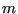
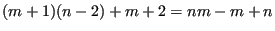
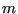
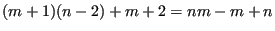
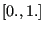
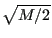
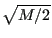

Next: Direct integration dynamic analysis Up: Types of analysis Previous: Modal dynamic analysis Contents
In a steady state dynamics analysis, triggered by the *STEADY STATE DYNAMICS key word, the response of the structure to dynamic harmonic loading is assumed to be a linear combination of the lowest eigenmodes. This is very similar to the modal dynamics procedure, except that the load is harmonic in nature and that only the steady state response is of interest. The eigenmodes are recovered from a file "problem.eig", where "problem" stands for the name of the structure. These eigenmodes must have been determined in a previous step (STORAGE=YES on the *FREQUENCY card or on the *HEAT TRANSFER,FREQUENCY card), either in the same input deck, or in an input deck run previously. The dynamic harmonic loading is defined by its amplitude using the usual keyword cards such as *CLOAD and a frequency interval specified underneath the *STEADY STATE DYNAMICS card. The load amplitudes can be modified by means of a *AMPLITUDE key word, which is interpreted as load factor versus frequency (instead of versus time).
If centrifugal loading (cf. *DLOAD) is found, it is assumed that the complete calculation (eigenmode calculation inclusive) has been performed in a relative coordinate system attached to the rotating structure. The centrifugal loading is kept fixed and is not subject to the harmonic excitation. Coriolis forces are activated for any part subject to centrifugal loading. The resulting response (displacements, stresses etc.) from the steady state calculation is in the rotating (relative) system, without the static centrifugal part.
The displacement boundary conditions in a modal dynamic analysis should match zero boundary conditions in the same nodes and same directions in the step used for the determination of the eigenmodes. They can be defined using *BOUNDARY cards or *BASE MOTION cards. The latter can also be used to define an acceleration. Temperature loading or residual stresses are not allowed. If such loading arises, the direct integration dynamics procedure should be used.
One can define loading which is shifted by  by using the parameter
LOAD CASE = 2 on the loading cards (e.g. *CLOAD).
by using the parameter
LOAD CASE = 2 on the loading cards (e.g. *CLOAD).
The frequency range is specified by its lower and upper bound. The number of data
points within this range  can also be defined by the user. If
no eigenvalues occur within the specified range, this is the total number of
data points taken, i.e. including the lower frequency bound and the
upper frequency bound. If one or more eigenvalues fall within the specified range,
can also be defined by the user. If
no eigenvalues occur within the specified range, this is the total number of
data points taken, i.e. including the lower frequency bound and the
upper frequency bound. If one or more eigenvalues fall within the specified range,  points are taken in between the lower frequency bound and the lowest eigenfrequency
in the range,
points are taken in between the lower frequency bound and the lowest eigenfrequency
in the range,  between any subsequent eigenfrequencies in the range and
between any subsequent eigenfrequencies in the range and
 points in between the highest eigenfrequency in the range and the upper
frequency bound. In addition, the eigenfrequencies are also included in the
data points. Consequently, if  eigenfrequencies belong to the specified
range,
 data points are taken. They are equally spaced
in between the fixed points (lower frequency bound, upper frequency bound and
eigenfrequencies) if the user specifies a bias equal to 1. If a different bias
is specified, the data points are concentrated about the fixed points.
points in between the highest eigenfrequency in the range and the upper
frequency bound. In addition, the eigenfrequencies are also included in the
data points. Consequently, if  eigenfrequencies belong to the specified
range,
 data points are taken. They are equally spaced
in between the fixed points (lower frequency bound, upper frequency bound and
eigenfrequencies) if the user specifies a bias equal to 1. If a different bias
is specified, the data points are concentrated about the fixed points.
The following damping options are available:
For nonharmonic loading, triggered by the parameter HARMONIC=NO on the *STEADY STATE DYNAMICS card, the loading across one period is not harmonic and has to be specified in the time domain. To this end the user can specify the starting time and the final time of one period and describe the loading within this period with *AMPLITUDE cards. Default is the interval  and step loading. Notice that for nonharmonic loading the *AMPLITUDE cards describe amplitude versus TIME. Internally, the nonharmonic loading is expanded into a Fourier series. The user can specify the number of terms which should be used for this expansion, default is 20. The remaining input is the same as for harmonic loading, i.e. the user specifies a frequency range, the number of data points within this range and the bias. The comments above for harmonic loading also apply here, except that, since the loading is defined in the time domain, the LOAD CASE parameter does not make sense here, i.e. LOAD CASE = 1 by default.
A steady state dynamic analysis can also be performed for a cyclic symmetric structure. To this end, the eigenmodes must have been determined for all relevant modal diameters. For a cyclic steady state dynamic analysis the following limiations apply:
For cyclic symmetric structures the sector used in the corresponding
*FREQUENCY step is expanded into 360 and the eigenmodes are rescaled
based on the mass of this expansion, i.e. they are divided by
and the eigenmodes are rescaled
based on the mass of this expansion, i.e. they are divided by  (for
nodal diameter 0 and M/2, the latter only if M is even) or
 (other
nodal diameters). M is the number of bases sectors in 360
(for
nodal diameter 0 and M/2, the latter only if M is even) or
 (other
nodal diameters). M is the number of bases sectors in 360 .
.
The output of a steady state dynamics calculation is complex, i.e. it consists of a real and an imaginary part. Consequently, if the user saves the displacements to file, there will be two entries: first the real part of the displacement, then the imaginary part. This also applies to all other output variables such as temperature or stress. For the displacements, the temperatures and the stresses the user can request that these variables are stored as magnitude and phase (in that order) by selecting beneath the *NODE FILE card PU, PNT and PHS instead of U, NT and S respectively. This does not apply to the *NODE PRINT card.
Special caution has to be applied if 1D and 2D elements are used. Since these elements are internally expanded into 3D elements, the application of boundary conditions and point forces to nodes requires the creation of multiple point constraints linking the original nodes to their expanded counterparts. These MPC's change the structure of the stiffness and mass matrix. However, the stiffness and mass matrix is stored in the .eig file in the *FREQUENCY step preceding the *STEADY STATE DYNAMICS step. This is necessary, since the mass matrix is needed for the treatment of the initial conditions ([19]) and the stiffness matrix for taking nonzero boundary conditions into account. Summarizing, the *STEADY STATE DYNAMICS step should not introduce point loads or nonzero boundary conditions in nodes in which no point force or boundary condition was defined in the *FREQUENCY step. The value of the point force and boundary conditions in the *FREQUENCY step can be set to zero. An example for the application of point forces to shells is given in shellf.inp of the test example set.